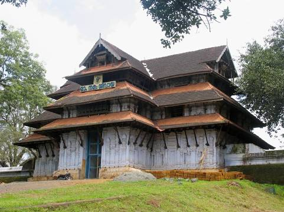

TOP DESTINATIONS
-

Sakthanthampuran palace
Shakthan Thampuran Palace is situated in City of Thrissur in Kerala state, India. It is named as Vadakkekara Palace, was reconstructed in Kerala-Dutch style in 1795 by Ramavarma Thampuran of the erstwhile Princely State of Cochin, well as Sakthan Thampuran is preserved by Archaeological Department. The palace was converted into a museum in 2005 by State
-

Sri Vadakkunnathan Temple
Vadakkumnathan Temple is an ancient Hindu temple dedicated to Shiva at city of Thrissur, of Kerala state in India. This temple is a classical example of the architectural style of Kerala and has one monumental tower on each of the four sides in addition to a kuttambalam. Mural paintings depicting various scenes from the Mahabharata can be seen inside the temple. The shrines and the Kuttambalam display vignettes carved in wood. The temple, along with the mural paintings, has been declared as a National Monument by India under the AMASR Act. According to popular local lore, this is the first temple built by Parasurama, the sixth avatara of Vishnu. Thekkinkadu Maidan, encircling the Vadakkunnathan Temple, is the main venue of the renowned Thrissur Pooram festival. In the year 2012 the Archaeological Survey of India has recommended 14 sites, including Vadakkumnathan Temple and palaces, from Kerala to include in the list of UNESCO World Heritage Sites. The temple is also the first one among the 108 Shiva Temples in ancient Kerala
-
Paramekkavu Bhagavathi Temple
Paramekkavu Bagavathi Temple is one of the largest Bagavathi temples in Kerala located in Thrissur City. Sakthan Thampuran ordained the temples into two groups, namely "Paramekkavu side" and "Thiruvambady side" for Thrissur Pooram which is the biggest festival in South India and Kerala. These two groups are headed by the principal participants, Paramekkavu Bagavathi Temple at Thrissur Swaraj Round and Thiruvambadi Sri Krishna Temple at Shoranur road. The two temples are hardly 500 metres apart. Thiruvambadi Sri Krishna Temple is one of the two groups participating in Thrissur Pooram. The Paramekkavu temple devaswom have a school known as Paramekkavu Vidya Mandir at MLA road near Kutoor and one KG section near to the temple itself.
-

Vilangan Hills
Vilangan Hills is a hillock located in Adat Panchayat, near Thrissur city of Kerala state in India. The hill gives a panoramic view of Thrissur city and Thrissur Kole Wetlands from the top. The hill was referred as a Oxygen Jar of Thrissur city. The name 'Vilangan Kunnu' is a misnomer because 'Vilangan' itself means hill. There is no need of adding 'Kunnu' after 'Vilangan'. It is an ancient Malayalam word derived from proto-Dravidian language. Till the 1970s the word 'Kunnu' was not used by revenue authorities and locals. It is a recent addition. In Tamil too 'Vilangan' means hill
-
Thrissur Museum
Archaeological Museum, Thrissur is an art and archaeological museum situated in Thrissur City of Kerala state, India. The museum is located in the Thrissur Zoo compound.